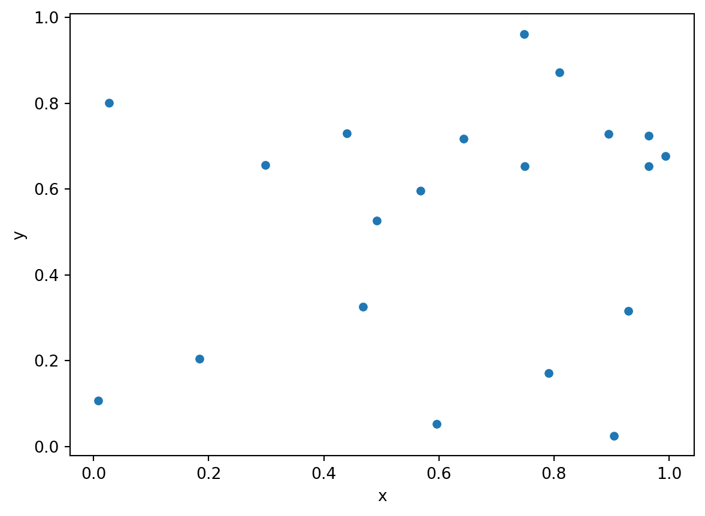
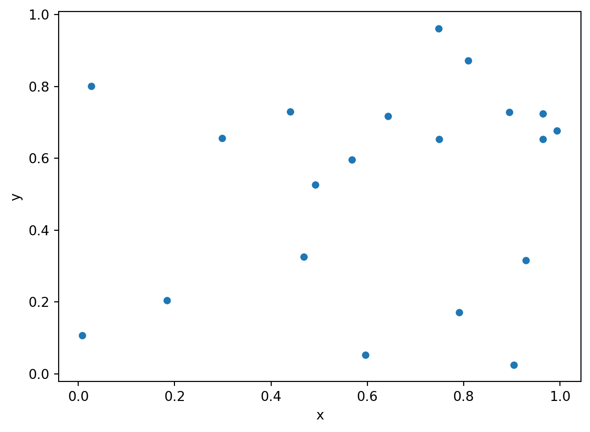
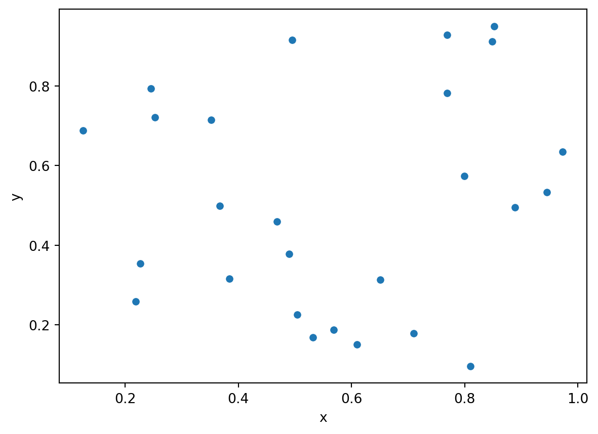
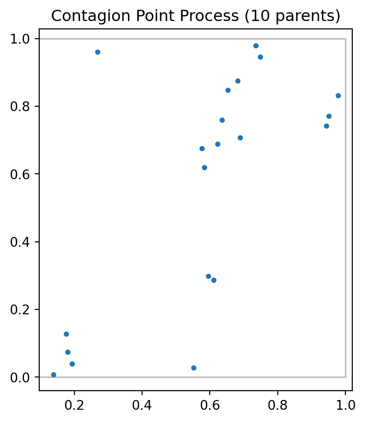
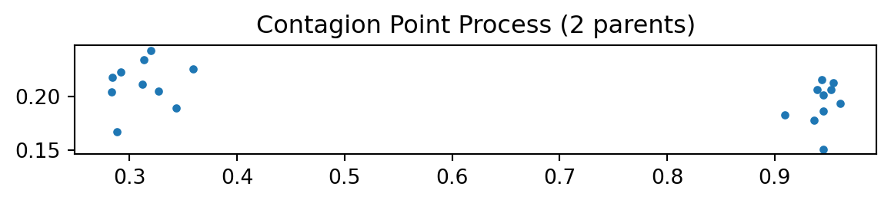
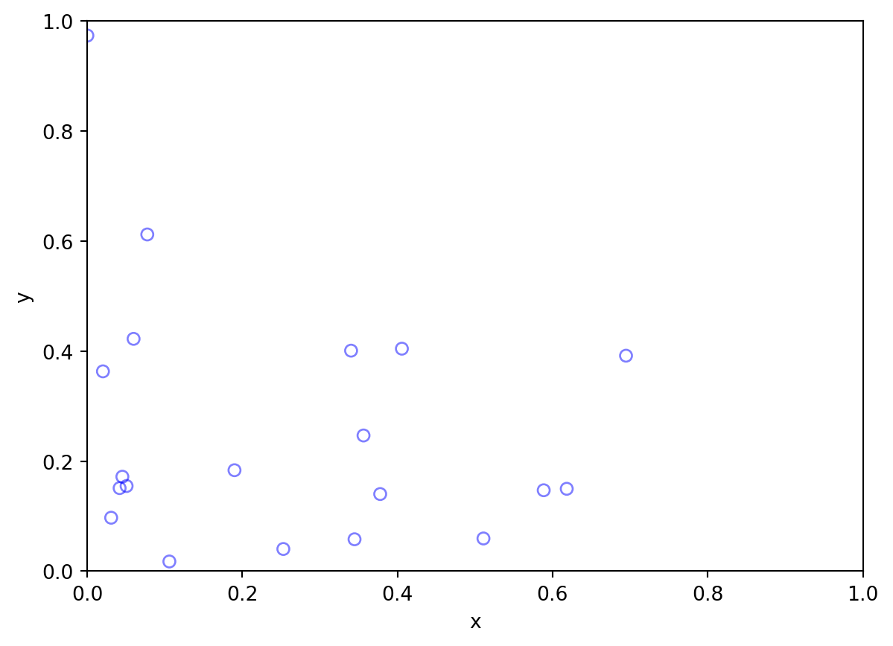
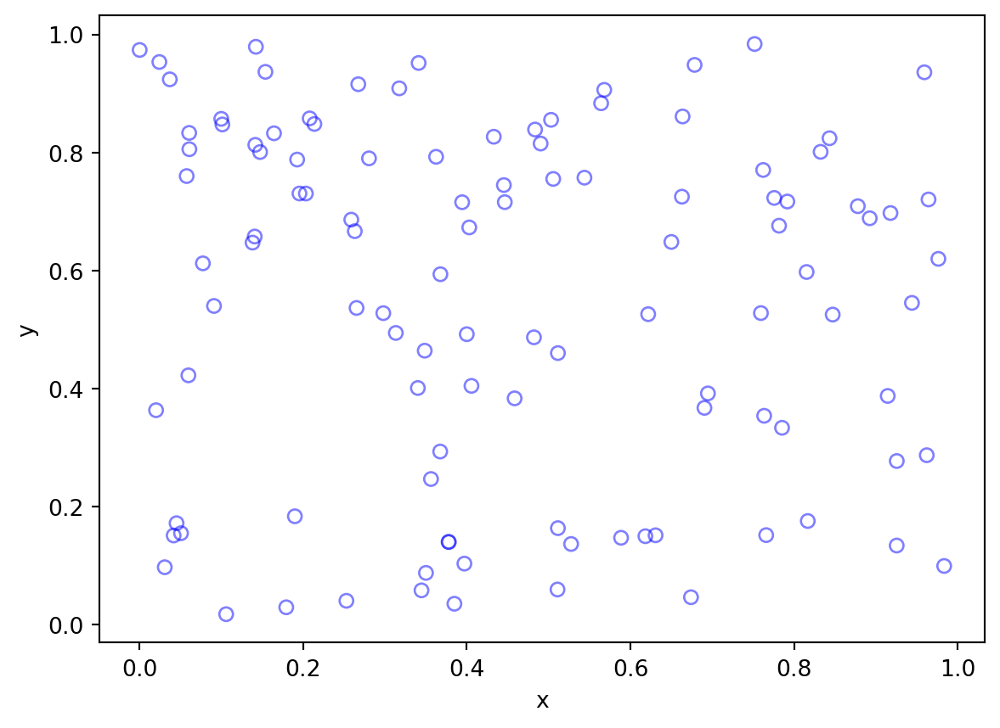
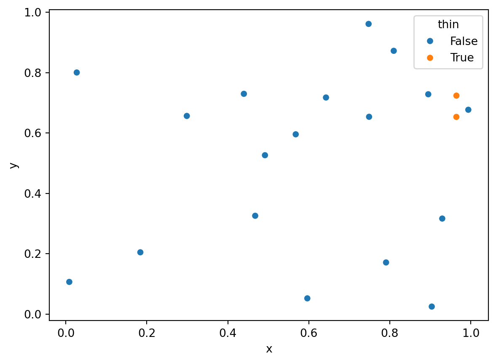
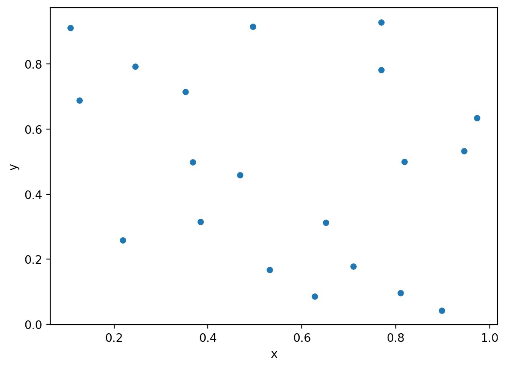
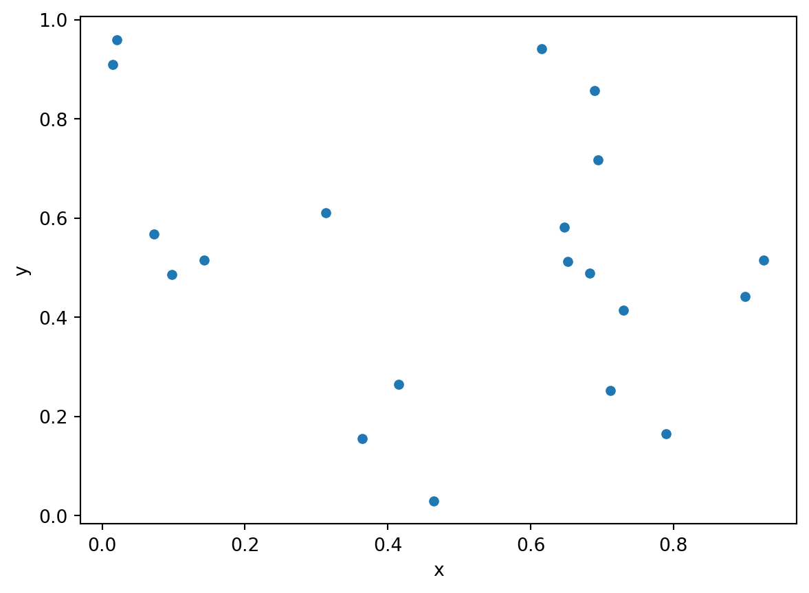

Code
import numpy as np
import pandas as pd
import seaborn as sns
np.random.seed(12345)
xy = np.random.rand(20,2)
df = pd.DataFrame(data=xy, columns=['x','y'])
sns.scatterplot(x='x', y='y', data=df);
df.shape
Thus far we have been looking at a collection of points as a point pattern.
Now we want to take a different view of that pattern, one that sees the pattern as the outcome of a process.
A point process is a statistical model that will generate point patterns with particular characteristics.
From a scientific point of view we are interested in making inferences about the process that may have generated our point pattern.
Mean value of the process in space
Variation in mean value of the process in space
Global, large scale spatial trend
First Order Property of Point Patterns, Intensity: \(\lambda\)
Intensity: \(\lambda\) = number of events expected per unit area
Estimation of \(\lambda\)
Spatial variation of \(\lambda\), \(\lambda(s)\), \(s\) is a location
\[\lambda(s) = \lim_{ds\rightarrow 0}\left\{ \frac{E(Y(ds))}{ds} \right\}\]
Spatial Correlation Structure
Second Order Property of Point Patterns
Relationship between number of events in pairs of areas
Second order intensity \(\gamma(s_i,s_j)\)
\[\gamma(s_i,s_j) = \lim_{ds_i\rightarrow 0,ds_j\rightarrow 0}\left\{ \frac{E(Y(ds_i)Y(ds_j))}{ds_ids_j} \right\}\]
First Order Stationarity \[\lambda(s) = \lambda \forall s \in A\] \[E(Y(A)) = \lambda \times A\]
Second Order Stationarity \[\gamma(s_i,s_j) = \gamma(s_i - s_j) = \gamma(h)\]
\(h\) is the vector difference between locations \(s_i\) and \(s_j\)
\(h\) encompasses direction and distance (relative location)
Second order intensity only depends on \(h\) for second order stationarity
Isotropic Process
When a stationary process is invariant to rotation about the origin.
Relationship between two events depend only on the distance separating their locations and not on their orientation to each other.
Depends only on distance, not direction
Usefulness
Two pairs of events from a stationary process separated by same distance and relative direction should have same “relatedness”
Two pairs of events from a stationary and isotropic process separated by the same distance (irrespective of direction) should have the same “relatedness”
Both allow for replication and the ability to carry out estimation of the underlying DGP.


CSR
Standard of Reference
Uniform: each location has equal probability
Independent: location of points independent
Homogeneous Planar Poisson Point Process
Intensity
number of points in region \(A: N(A)\)
intensity: \(\lambda = N/|A|\)
implies: \(\lambda |A|\) points randomly scattered in a region with area \(|A|\)
e.g., \(10\times 1\) (points per \(km^2\))
Poisson Distribution \(N(A) \sim Poi(\lambda |A|)\)
Single Parameter Distribution: \(\lambda |A|\)
Generally, \(\lambda\) is the number of events in some well defined interval
Time: phone calls to operator in one hour
Time: accidents at an intersection per week
Space: trees in a quadrat
Let \(x\) be a Poisson random variable
Poisson Distribution \[P(x) = \frac{e^{-\lambda |A|} (\lambda |A|)^x}{x!}\]
CSR with \(\lambda = 5/km^2\)
Region = Circle
area = \(|A| = \pi r^2\)
\(r=0.1\ km\) then area \(\approx 0.03 \ km^2\)
Probability of Zero Points in Circle \[\begin{aligned} P[N(A) = 0] &= & e^{-\lambda |A|} (\lambda |A|)^x /x!\\ &\approx&e^{-5 \times 0.03} (5 \times 0.03)^0 /0!\\ &\approx&e^{-5 \times 0.03} \\ &\approx&0.86 \end{aligned}\]
Homogeneous spatial Poisson point process
The number of events occurring within a finite region \(A\) is a random variable following a Poisson distribution with mean \(\lambda|A|\), with \(|A|\) denoting area of \(A\).
Given the total number of events \(N\) occurring within an area \(A\), the locations of the \(N\) events represent an independent random sample of \(N\) locations where each location is equally likely to be chosen as an event.
Criterion 2 is the general concept of CSR (uniform (random)) distribution in \(A\).
Criterion 1 pertains to the intensity \(\lambda\).
Implications
The number of events in nonoverlapping regions in \(A\) are statistically independent.
For any region \(R \subset A\): \[\lim_{|R| \rightarrow 0} \frac{Pr[exactly\ one\ event\ in\ R]}{|R|} = \lambda > 0\]
\[\lim_{|R| \rightarrow 0} \frac{Pr[more\ than\ one\ event\ in\ R]}{|R|} = 0\]
:::
Implications
\(\lambda\) is the intensity of the spatial point pattern.
For a Poisson random variable, \(Y\): \[E[Y] = \lambda = V[Y]\]
Provides the motivation for some quadrat tests of CSR hypothesis.
If \(Y_R\) is the count in quadrat \(R\)
If \(\widehat{E[Y]}< \widehat{V[Y]}\): overdispersion = spatial clustering
If \(\widehat{E[Y]}> \widehat{V[Y]}\): underdispersion = spatial uniformity
import numpy as np
import pandas as pd
import seaborn as sns
np.random.seed(12345)
xy = np.random.rand(20,2)
df = pd.DataFrame(data=xy, columns=['x','y'])
sns.scatterplot(x='x', y='y', data=df);
df.shape
The example we just did is known as \(n-conditioning\) where we will always get \(n\) points for the CSR process.
A slightly different approach to generating a random point process is to use \(\lambda-conditioning\)
from scipy.stats import poisson
lam=20
n = poisson.rvs(lam, 1)
xy = np.random.rand(n,2)
df = pd.DataFrame(data=xy, columns=['x','y'])
sns.scatterplot(x='x', y='y', data=df);
df.shape
The difference is the number of points in the pattern will always be \(n\) with \(n-conditioning\) but may not be \(n\) with \(\lambda-conditioning\). The latter allows the intensity to be drawn from a Poisson distribution, then that becomes the parameter for the draw of the point pattern.
Stationary Poisson Process
Rare in practice - very few actual processes are CSR
Strawman
purely a benchmark
null hypothesis
Criteria
The number of events occurring within a finite region \(A\) is a random variable following a Poisson Distribution with mean \(\int_{A}\lambda(s) ds\).
Given the total number of events \(N\) occurring within \(A\), the \(N\) events represent an independent sample of \(N\) locations, with the probability of sampling a particular point \(s\) proportional to \(\lambda(s)\).
Spatially Variable Intensity \(\lambda(s)\)
Useful for constant risk hypothesis
Underlying population at risk is spatially clustered
Want to control for that since with individual constant risk apparent clusters would be generated.
Compare pattern against constant risk, not CSR.
Implications
Apparent clusters can occur solely due to heterogeneities in the intensity function \(\lambda(s)\).
Individual event locations still remain independent of one another.
Process is not stationary due to intensity heterogeneity
HPP vs. IPP HPP is a special case of IPP with a constant intensity
CSR
Intensity is spatially constant
Population at risk assumed spatially uniform
Useful null hypothesis if these conditions are met
Constant Risk Hypothesis
Population density variable
Individual risk constant
Expected number of events should vary with population density
Clusters due to deviation from CSR
Clusters due to deviation from CSR and Constant Risk
Clustered Patterns are more grouped than random patterns. Visually, we can observe more points at short distances. There are two sources of clustering:
We are going to focus on simulating correlated point process in this notebook. One example of correlated point process is Poisson cluster process. Two stages are involved in simulating a Poisson cluster process. First, parent events are simulted from a λ-conditioned or n-conditioned CSR.
Second, n offspring events for each parent event are simulated within a circle of radius r centered on the parent. Offspring events are independently and identically distributed.
import pointpats as pp
np.random.seed(12345)
w = pp.Window([(0,0), (0,1), (1,1), (1,0), (0,0)])
draw = pp.PoissonClusterPointProcess(w, 20, 10, 0.05, 1, asPP=True, conditioning=False)
draw.realizations[0].plot(window=True, title='Contagion Point Process (10 parents)')
import pointpats as pp
np.random.seed(12345)
w = pp.Window([(0,0), (0,1), (1,1), (1,0), (0,0)])
draw = pp.PoissonClusterPointProcess(w, 20, 2, 0.05, 1, asPP=True, conditioning=False)
draw.realizations[0].plot(window=True, title='Contagion Point Process (2 parents)')
Intensity varies with a covariate
Intensity varies with distance to a focus
Intensity function:
\(\lambda(s) = 100 e^{-(x^2 + y^2) / \sigma}\)
\(\sigma\) is a scale parameter here, equal to 0.5
import numpy as np; # NumPy package for arrays, random number generation, etc
import matplotlib.pyplot as plt # For plotting
from scipy.optimize import minimize # For optimizing
from scipy import integrate # For integrating
plt.close('all'); # close all figures
# Simulation window parameters
xMin = 0;
xMax = 1;
yMin = 0;
yMax = 1;
xDelta = xMax - xMin;
yDelta = yMax - yMin; # rectangle dimensions
areaTotal = xDelta * yDelta;
numbSim = 10 ** 3; # number of simulations
s = 0.5; # scale parameter
# Point process parameters
def fun_lambda(x, y):
return 100 * np.exp(-(x ** 2 + y ** 2) / s ** 2); # intensity function
#fun_lambda = lambda x,y: 100 * np.exp(-(x ** 2 + y ** 2) / s ** 2);
###START -- find maximum lambda -- START ###
# For an intensity function lambda, given by function fun_lambda,
# finds the maximum of lambda in a rectangular region given by
# [xMin,xMax,yMin,yMax].
def fun_Neg(x):
return -fun_lambda(x[0], x[1]); # negative of lambda
#fun_Neg = lambda x: -fun_lambda(x[0], x[1]); # negative of lambda
xy0 = [(xMin + xMax) / 2, (yMin + yMax) / 2]; # initial value(ie centre)
# Find largest lambda value
resultsOpt = minimize(fun_Neg, xy0, bounds=((xMin, xMax), (yMin, yMax)));
lambdaNegMin = resultsOpt.fun; # retrieve minimum value found by minimize
lambdaMax = -lambdaNegMin;
###END -- find maximum lambda -- END ###
# define thinning probability function
def fun_p(x, y):
return fun_lambda(x, y) / lambdaMax;
#fun_p = lambda x, y: fun_lambda(x, y) / lambdaMax;
# for collecting statistics -- set numbSim=1 for one simulation
numbPointsRetained = np.zeros(numbSim); # vector to record number of points
for ii in range(numbSim):
# Simulate a Poisson point process
numbPoints = np.random.poisson(areaTotal * lambdaMax); # Poisson number of points
xx = np.random.uniform(0, xDelta, ((numbPoints, 1))) + xMin; # x coordinates of Poisson points
yy = np.random.uniform(0, yDelta, ((numbPoints, 1))) + yMin; # y coordinates of Poisson points
# calculate spatially-dependent thinning probabilities
p = fun_p(xx, yy);
# Generate Bernoulli variables (ie coin flips) for thinning
booleRetained = np.random.uniform(0, 1, ((numbPoints, 1))) < p; # points to be retained
# x/y locations of retained points
xxRetained = xx[booleRetained];
yyRetained = yy[booleRetained];
numbPointsRetained[ii] = xxRetained.size;
# Plotting
plt.scatter(xxRetained, yyRetained, edgecolor='b', facecolor='none', alpha=0.5);
plt.xlabel('x');
plt.ylabel('y');
plt.xlim([xMin, xMax]);
plt.ylim([xMin, xMax]);
That pattern comes from a spatially-explicit thinning of a CSR pattern:
# Plotting
plt.scatter(xx, yy, edgecolor='b', facecolor='none', alpha=0.5);
plt.xlabel('x');
plt.ylabel('y');
Less grouped than CSR
Underdispersion
Minimum Permissible Distance
Matern Process
np.random.seed(12345)
delta = 0.1
n = 20
xy = np.random.random((n,2))
xy
from scipy.spatial import distance_matrix
d = distance_matrix(xy, xy) # 20 x 20 distance matrix
d[0] # first rowarray([0. , 0.75403388, 0.4570564 , 0.33860475, 0.38256491,
0.67009276, 0.94484483, 0.716711 , 0.56856568, 0.40881349,
0.49326812, 0.46210886, 0.64101492, 0.36620498, 0.20105384,
1.02432357, 0.29284635, 0.4855703 , 0.42540863, 0.41333518])Determine which observations to thin
ijs = np.where(d<delta)
i,j = ijs
pairs = list(zip(i[i!=j], j[i!=j]))
print("The pairs within delta of one another:")
print(pairs)
drop = []
for left, right in pairs:
if left in drop or right in drop:
continue
else:
drop.append(left)
print("Observations to drop:")
print(drop)The pairs within delta of one another:
[(np.int64(3), np.int64(9)), (np.int64(3), np.int64(13)), (np.int64(9), np.int64(3)), (np.int64(9), np.int64(13)), (np.int64(9), np.int64(19)), (np.int64(13), np.int64(3)), (np.int64(13), np.int64(9)), (np.int64(19), np.int64(9))]
Observations to drop:
[np.int64(3), np.int64(9)]import pandas as pd
df = pd.DataFrame(data=xy, columns=['x', 'y'])
df['thin'] = False
df.iloc[drop, df.columns.get_loc('thin')] = True
df.head()| x | y | thin | |
|---|---|---|---|
| 0 | 0.929616 | 0.316376 | False |
| 1 | 0.183919 | 0.204560 | False |
| 2 | 0.567725 | 0.595545 | False |
| 3 | 0.964515 | 0.653177 | True |
| 4 | 0.748907 | 0.653570 | False |
import seaborn as sns
sns.scatterplot(x='x', y='y', hue='thin', data=df);
delta = 0.1
N = 20
n = 1
xy = np.zeros((N,2))
xy[0,:] = np.random.rand(1,2)
while n < N:
candidate = np.random.rand(1,2)
d = distance_matrix(xy[:n,:], candidate)
if d.min() > delta:
xy[n,:] = candidate
n += 1
df = pd.DataFrame(data=xy, columns=['x', 'y'])
sns.scatterplot(x='x', y='y', data=df);
delta = 0.1
xy = np.random.rand(20,2)
df = pd.DataFrame(data=xy, columns=['x', 'y'])
sns.scatterplot(x='x', y='y', data=df);